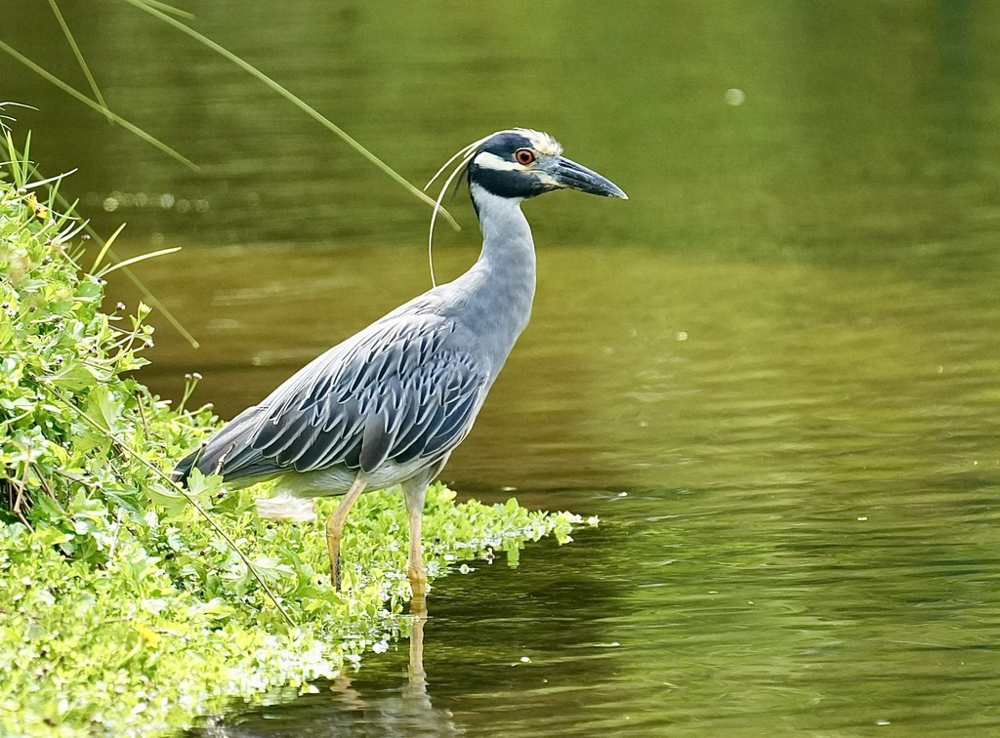

- The yellow-crowned night heron is a stocky gray wading bird with a bold black-and-white face and a creamy crown.
- It is a crustacean specialist — more than most herons, it lives on crabs and crayfish, and its stout, heavy bill is built for cracking their shells.
- Despite the 'night' in its name, it feeds by day as well as after dark, whenever its prey is active.
- You will usually find it alone, hunched and leaning forward at the water's edge, watching the mud and shallows for movement.
Smooth gray body, a black head with a broad white cheek patch and a pale creamy crown, and long white head plumes in breeding season.
Stout, heavy, and black — noticeably thicker than other herons'.
Brown with fine white spots and streaks.
Hunched and forward-leaning.
Generally quiet; gives a sharp, barking squawk, especially in flight or around the colony.
A compact gray heron with a striking black-and-white face, often hunched at the water's edge while hunting — though it stands more upright and longer-legged when walking. The heavy bill and bold face pattern set it apart from the lankier, plainer herons; young birds are brown and spotted.
Mostly crabs and crayfish, cracked open with its heavy bill, plus some fish, insects, and other small animals.
Alone at the pond edges and shallows, hunched and watching for crayfish, or roosting quietly in waterside trees. Active by day as well as toward dusk.
Year-round resident, though often quiet and easy to overlook. Active in daylight as well as at night.
Watch from a distance and do not feed it. A hunting heron needs quiet to catch its prey.


- © Rhonda Olschefskie (CC-BY-NC), via iNaturalist
- © celestes (CC-BY-NC), via iNaturalist
- © Rob Carr (CC-BY-NC), via iNaturalist